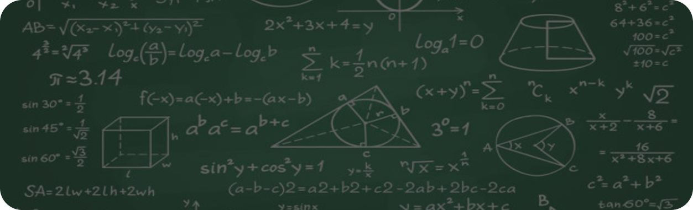
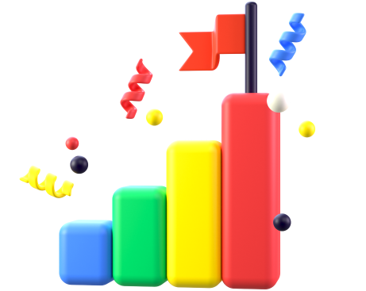

{{template "base" .}}
{{define "content"}}
<main class="main">
    <section class="top">
        <div class="top__inner">
            
            <p class="top__title">
                Wiskunde is maklik
            </p>
            <p class="top__text">
                Именно данный слоган доказывает, что математика, как и любой другой предмет, подвластен
                каждому.
            </p>
        </div>
    </section>
    <section class="middle">
        <div class="middle__inner">
            
            
            <p class="middle__title"><b>Подготовка к поступлению в <br> ФМШ</b> №2007</p>
            <p class="middle__text">Наш курс основан на темах, которые используются в экзамене при поступлении в
                школу. После полного прохождения курса «Математика. Подготовка к поступлению» вы или же ваш ребёнок
                получат необходимые знания и умения для успешного написания вступительных работ.</p>
        </div>
    </section>
    <section class="underpart">
        <div class="underpart__inner">
            <div class="underpart__right">
                
                <div class="button__info">
                    <a href="#" class="info__link">Подробнее о программе</a>
                </div>
            </div>
            <div class="underpart__middle">
                <div class="underpart__description">
                    <p class="title_description">Задачи</p>
                    <p class="text__description">Курс включает в себя более 300 разнообразных задач, составленных
                        самостоятельно.</p>
                </div>
                <div class="underpart__description">
                    <p class="title_description">Живое общение</p>
                    <p class="text__description">Все занятия будут проходить очно в специализированном для учебного
                        процесса месте.</p>
                </div>
                <div class="underpart__description">
                    <p class="title_description">Темы занятий</p>
                    <p class="text__description">На занятиях будут разобраны более 10 различных тем, которые
                        присутствуют в экзамене.</p>
                </div>
            </div>
            <div class="underpart__right">
                <div class="underpart__description">
                    <p class="title_description">Видеофиксация</p>
                    <p class="text__description">В случае отсутствия на занятии, всегда можно пересмотреть
                        видеозапись, что позволит вам не
                        упустить всех важных моментов.</p>
                </div>
                <div class="underpart__description">
                    <p class="title_description">Домашние задания</p>
                    <p class="text__description">Занятия больше нацелены на живой и активный формат общения, нежели
                        на скучный лекционный
                        материал.</p>
                </div>
                <div class="underpart__description">
                    <p class="title_description">Интерактивы</p>
                    <p class="text__description">Занятия больше нацелены на живой и активный формат общения, нежели
                        на скучный лекционный
                        материал.</p>
                </div>
            </div>
        </div>
    </section>
</main>
{{end}}
